Failure mode analysis of ALDM
We show VQ-VAE codebook collapse is the root cause of ALDM's failure under limited data, supported by quantitative and latent-space (UMAP/PCA) evidence.
535510 RL Team Project · NYCU 2026
Department of Computer Science, National Yang Ming Chiao Tung University
*Equal contribution
Abstract
CT-to-MRI translation is clinically valuable but remains challenging when only a limited number of paired scans are available — a common constraint in real-world medical settings. Existing latent translation approaches typically formulate the task as a one-step alignment problem, requiring the model to learn a direct cross-modal mapping from sparse supervision. Such methods are highly sensitive to data scarcity and often suffer from degraded latent correspondence when paired samples are limited.
In this work, we reformulate CT-to-MRI translation as a multi-step latent transport problem. Our framework combines a Flow Matching (FM) prior, which provides globally consistent transport trajectories in latent space, with an RL correction policy that performs adaptive local refinements along the trajectory. To enable stable RL optimization under extremely limited supervision, we introduce the Flow Improvement Reward (FIR): a relative reward that measures improvement over the FM prior rather than absolute distance to the target modality, substantially reducing reliance on large paired datasets.
Experiments demonstrate that the proposed method remains effective with as few as 10 paired scans. Using approximately 1% of the training data required by previous latent alignment methods, our approach achieves SSIM = 0.7300 — surpassing ALDM trained on the full dataset (SSIM = 0.7167).
Contributions
We show VQ-VAE codebook collapse is the root cause of ALDM's failure under limited data, supported by quantitative and latent-space (UMAP/PCA) evidence.
A Flow Matching prior provides global transport direction while the RL correction policy handles local texture refinement — addressing FM's regression-to-mean limitation.
A relative reward signal measuring improvement over the FM prior at each ODE step, enabling stable RL training without large paired datasets.
~1% of the training data required by ALDM (~900 scans), yet surpassing ALDM trained on the full SynthRAD2025 dataset (SSIM = 0.7167).
Motivation
Existing latent-space approaches such as ALDM formulate CT-to-MRI translation as a one-step latent mapping problem. While effective with sufficient training data, these methods become highly sensitive to limited supervision. With only 10 paired CT-MRI scans, ALDM's VQ-VAE codebook collapses — generated outputs degrade into noisy, low-information patterns.
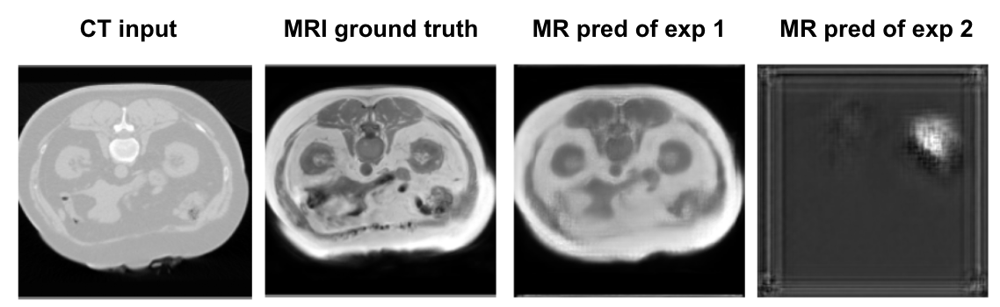
Method
The FGRL framework performs CT-to-MRI translation through progressive latent transport within a shared latent space. Three components work together: a Prior Flow Generator providing globally consistent transport directions; a Latent Transport Environment modeling the transformation as sequential navigation; and a Flow Correction Agent adaptively refining the trajectory via RL.
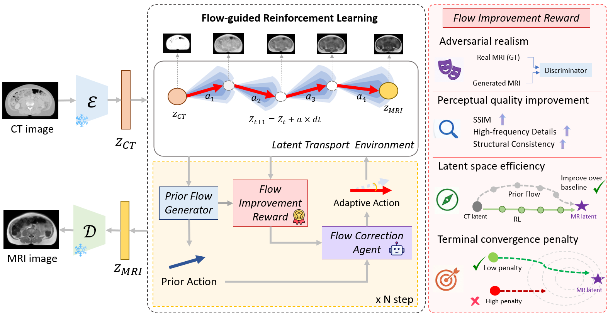
Flow Matching learns a conditional transport process between paired CT and MRI modalities directly — not from noise. Euler integration over N = 16 steps yields a stable global trajectory.
Predicts corrections decomposed into flow-parallel (speed adjustment) and flow-orthogonal (manifold correction) components on top of the FM prior, rather than learning transport from scratch.
Four components: adversarial realism, SSIM improvement over FM, high-frequency detail recovery, latent transport improvement, and a terminal convergence penalty at the final step.
FGRL-Lite uses REINFORCE (proof-of-concept). FGRL-Full uses PPO with ε = 0.1 clipping and 4 epochs per rollout for stable long-horizon trajectory optimization.
Results
All experiments (except ALDM Full data) use only 10 paired abdomen CT-MRI scans — ~1% of SynthRAD2025. Both FGRL variants outperform their respective Flow Matching baselines; FGRL-Full surpasses ALDM trained on the full dataset.
| Method | Paradigm | SSIM ↑ | PSNR ↑ |
|---|---|---|---|
| ALDM | One-step latent alignment | 0.1023 | 7.486 |
| Flow Matching (Lite) | Multi-step latent transport | 0.4916 | 16.4415 |
| FGRL-Lite | Multi-step transport + RL | 0.5107 | 16.6080 |
| Flow Matching (Full) | Multi-step latent transport | 0.7233 | 20.8050 |
| FGRL-Full | Multi-step transport + RL | 0.7300 | 20.9903 |
| ALDM (Full data, ~900 scans) | One-step latent alignment | 0.7167 | 16.5200 |
Data Efficiency Highlight
Our method uses 10 paired scans. ALDM on the full SynthRAD2025 dataset (~900 scans) achieves SSIM = 0.7167. Our Flow-guided RL with ~90× fewer scans reaches SSIM = 0.7300.
Note: All methods are evaluated on the same test set. The comparison highlights the data efficiency of the proposed method under extremely limited paired training data.
Visualization
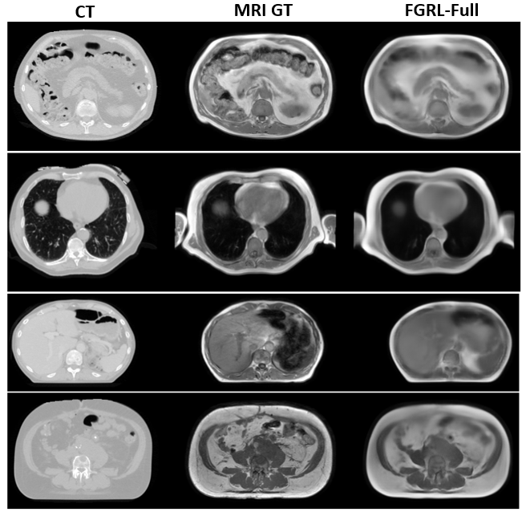
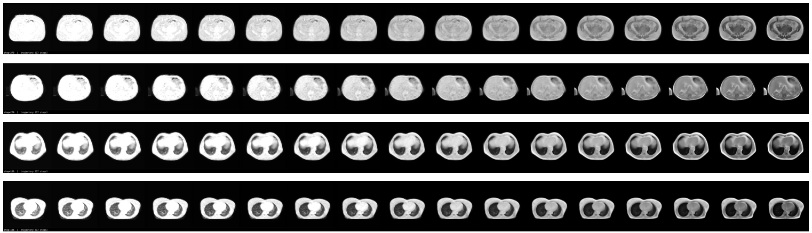
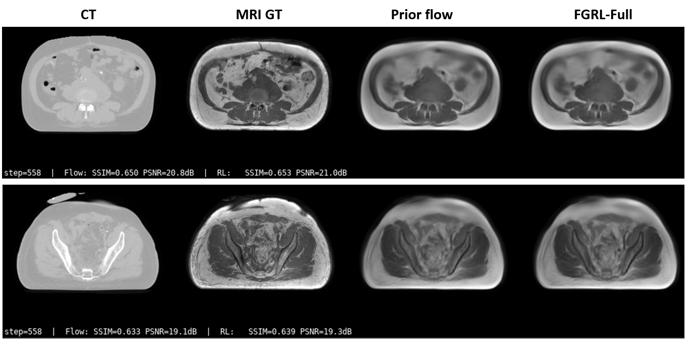
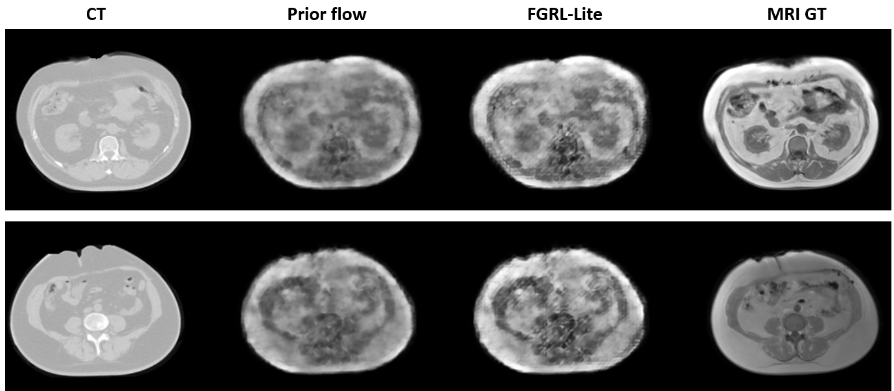
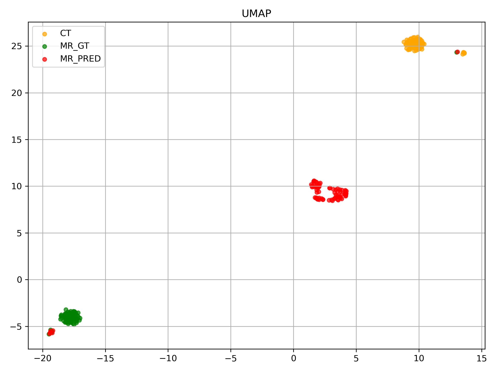
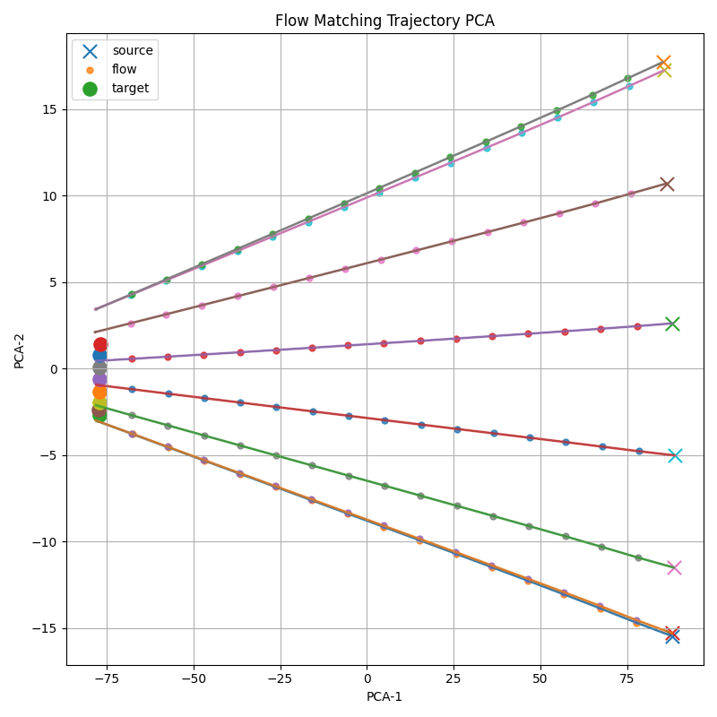
Ablation Study
Comparing Raw RL (learns transport from scratch) against FGRL-Lite (steers an FM trajectory). Both use REINFORCE on the 10-scan setting.
| Variant | FM Prior | SSIM ↑ | PSNR ↑ | MAE ↓ |
|---|---|---|---|---|
| Raw RL (w/o image reward) | ✗ | 0.3558 | 12.430 | 0.1987 |
| Raw RL (with image reward) | ✗ | 0.3601 | 12.9503 | 0.1914 |
| FGRL-Lite | ✓ | 0.5107 | 16.6080 | 0.0412 |
Comparing post-flow RL (acts on FM endpoint) against interleaved RL (acts at each of the 16 ODE steps), both using PPO.
| Variant | RL acts at | dist(z, zMR) | SSIM | Δ vs FM |
|---|---|---|---|---|
| Flow Matching only | — | — | 0.7233 | — |
| Post-flow PPO | FM endpoint | ≈ 0.09 (flat) | 0.7246 | +0.0013 |
| Interleaved PPO (FGRL-Full) | Each of 16 ODE steps | ≈ 1.09 (rich) | 0.7300 | +0.0067 |
Algorithm Comparison
Three algorithms were explored across two phases. This is a developmental narrative, not a controlled comparison — settings differ between REINFORCE and PPO/SAC.
| Algorithm | Description | Outcome |
|---|---|---|
| REINFORCE | Vanilla policy gradient with advantage baseline | SSIM 0.5107 (+0.02 over FM-Lite). Stable in toy experiment. |
| SAC | Off-policy actor-critic with entropy maximization | Complete failure — Q-function collapses to 0. |
| PPO | On-policy clipped surrogate (ε = 0.1, 4 epochs/rollout) | SSIM 0.7300 (+0.0067 over FM). Best with action_scale 0.1. |
Algorithm choice matters less than where RL intervenes. Both REINFORCE and PPO improve FM when applied interleaved. SAC fails not because of the algorithm, but because the post-flow reward landscape is too flat for any RL algorithm to learn from.
Analysis
ALDM's VQ-VAE codebook requires sufficient data diversity to span the CT→MRI transformation manifold. With only 10 training pairs the codebook collapses — generated latents cluster far from the real MRI distribution. Flow Matching sidesteps this: MSE on interpolated pairs is well-posed even at 10 samples, and multi-step integration accumulates small, stable corrections rather than forcing a single global mapping.
RL alone learns meaningful latent transport trajectories — trajectories progressively move from the CT distribution toward the MRI manifold. Training dynamics are stable (reward increases, latent distance decreases monotonically). However, without an explicit prior the policy must simultaneously discover global transport direction and local refinement strategy from sparse rewards — leading to blurry and anatomically inconsistent images despite convergent training.
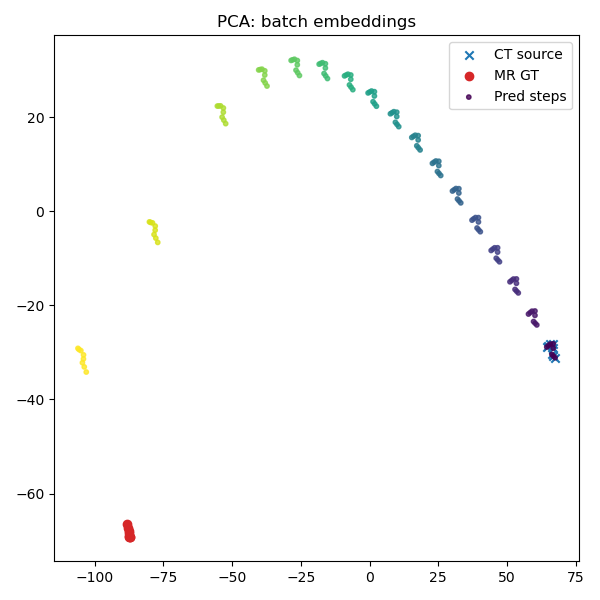
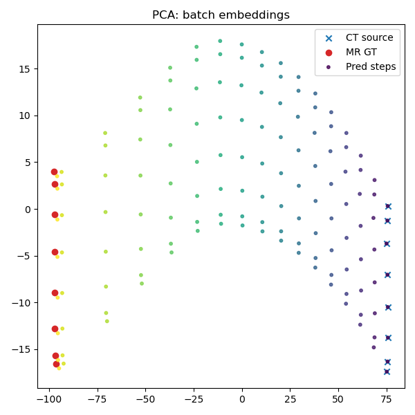
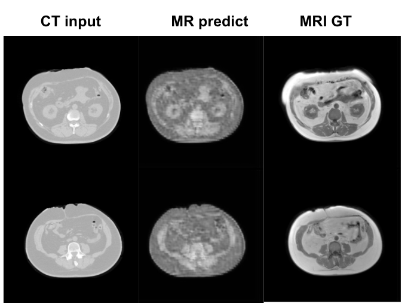
Reward, trajectory progress, and latent distance all improve monotonically during training, confirming that the policy learns a meaningful transport strategy rather than random exploration.
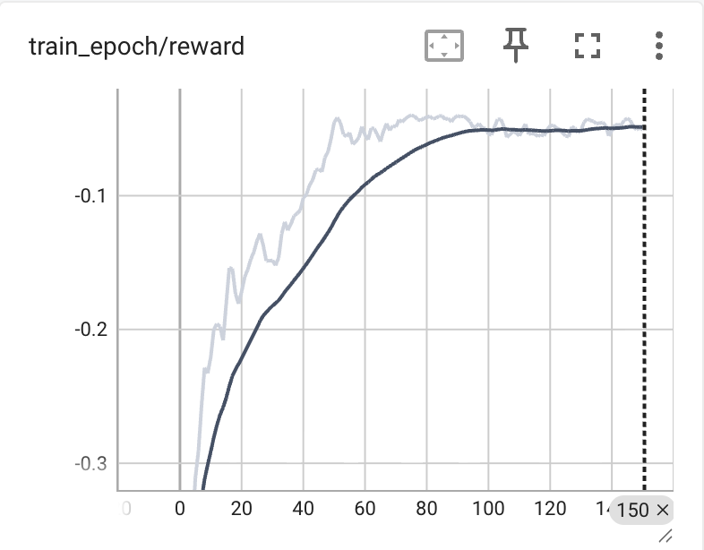
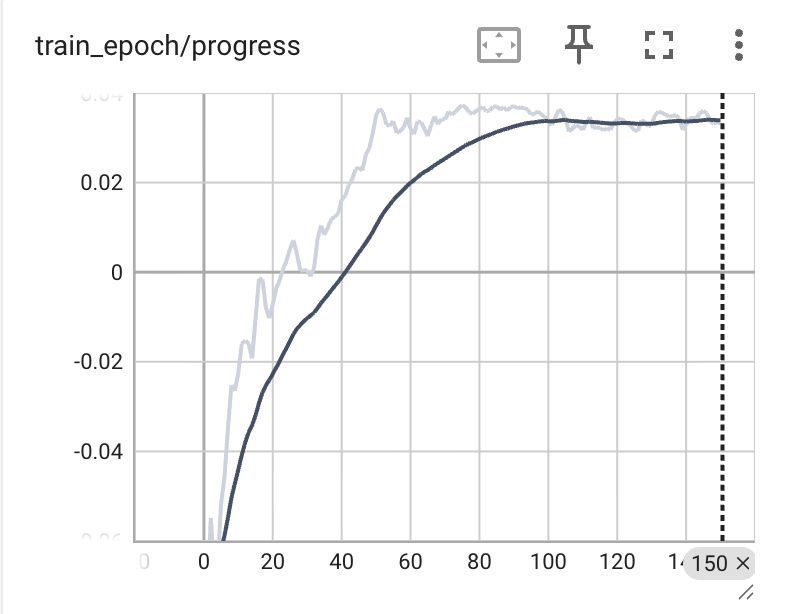
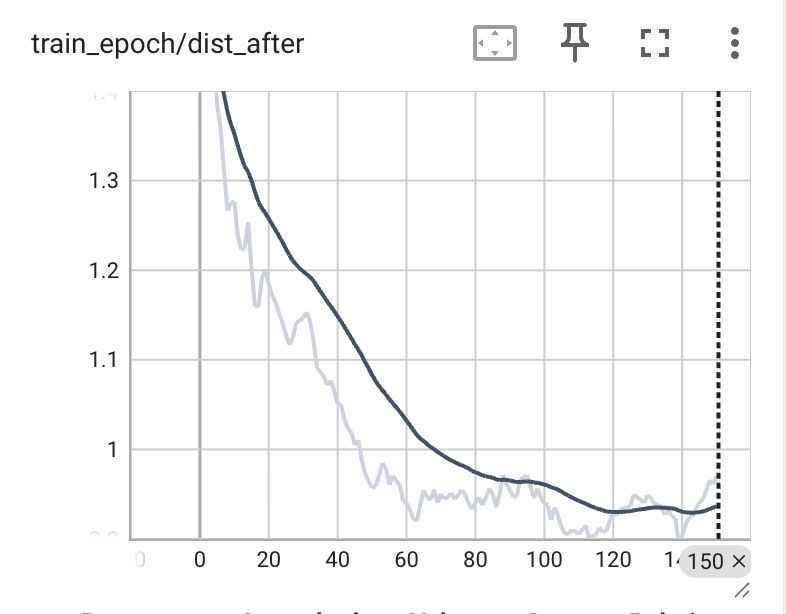
FM trajectories are globally optimal (straight-line interpolation during training) but sample-agnostic — the same velocity field is applied to every CT input. The RL policy applies input-specific corrections: the orthogonal component provides non-linear manifold correction, while the parallel component modulates adaptive speed per step. Together they give sample-level trajectory refinement that a fixed velocity field cannot achieve.
RL gains are modest (+0.02 REINFORCE, +0.0067 PPO interleaved). A small action scale is required for stability, limiting per-step correction magnitude. Evaluation covers a single test patient (PPO) and a single scan (REINFORCE), leaving generalization across anatomy and scanner protocols as an open question.
Conclusion
Our three-stage progression — one-step alignment (ALDM) → multi-step ODE transport (FM) → RL-guided adaptive transport — maps directly to the hypothesis that more steps and adaptivity improve synthesis quality in the data-scarce regime.
Key findings: (1) one-step methods collapse under 10 training pairs; (2) multi-step FM alone surpasses ALDM trained on the full dataset with ~90× less data; (3) RL consistently improves FM in both REINFORCE and PPO settings; (4) the critical design choice is where RL acts — interleaved ODE intervention outperforms post-flow by ~9× due to richer reward landscapes.
Future work: joint FM+RL training, adaptive action-scale scheduling, evaluation across all three SynthRAD2025 anatomical regions, and replacing the fixed 16-step ODE with an RL-guided adaptive step-size controller.
Interleaved ODE intervention outperforms post-flow correction by ~9× due to richer reward landscapes. PPO with clipped updates is most suitable; SAC fails due to Q-collapse in near-converged latent space.